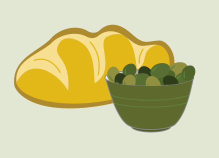

We take great pride in our timely and professional customer service, and are happy to answer any questions you may have by email or over the phone.
Two Trees Extra Virgin Olive Oil
1750 Vine St
Los Angeles, CA
1000 Elysian Park Ave
Los Angeles, CA
info@twotreesoliveoil.com
Customer Service

- Main Contact
- Corporate Restaurant Sales
Distribution Center